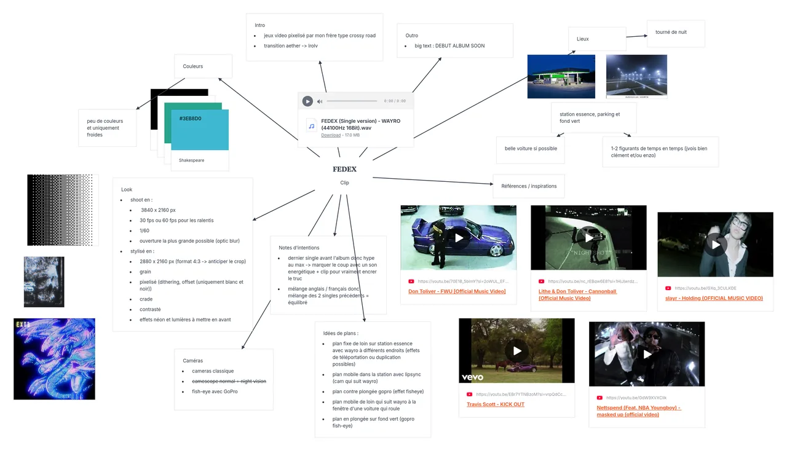
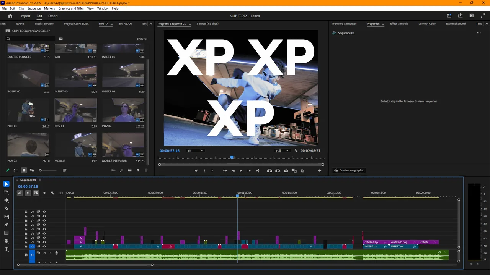

Présentation
Le dernier single
avant l'album.
FEDEX est le dernier des trois singles annonçant mon premier album, La Rage Ou La Vague. C'est le plus énergique et le plus « hype » des trois — c'est exactement pour cette raison que je l'ai choisi pour en réaliser le clip : faire monter la pression avant la sortie de l'album.

Mon rôle
Réalisateur,
jusqu'au montage.
Sur ce clip, j'étais le réalisateur : j'en portais toute la vision et j'ai assuré la direction artistique en guidant l'équipe sur l'ensemble du tournage. En post-production, je me suis occupé du montage, de la colorimétrie et des effets spéciaux.
Outils & matériel
Tourné avec
le collectif Zancudo.
Je n'étais pas seul : le clip a été tourné avec mes amis de Zancudo, un collectif créatif basé à Toulon. On a filmé sur leurs Sony A6700, complétés par un Canon R7 de l'université de Toulon et les appareils photo de certains d'entre eux. Côté lumière, de gros projecteurs et des panneaux LED Boling. Le montage et les effets spéciaux ont été réalisés sur Premiere Pro et After Effects.

Résultat